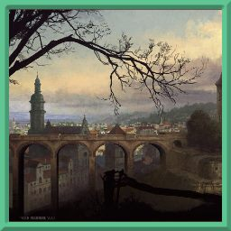

Среди бурных рек и колосящихся полей, на равнинах центрального Келарима живут Имперцы. Уже давно нет государства, которое возвысило и распространило свое влияние на весь цивилизованный мир, но традиция называть людей из этих земель Имперцами осталась. Живя в крупных городах, они активно развивают ремёсла. Их поля обширны, а земля плодородна. Государства крепки, а войны кровопролитны. Это и позволяет этим землям быть одними из богатейших на всём континенте.
Крестьяне массово занимаются сельским хозяйством, в городах начинают развиваться ремёсла, а местное дворянство богатеет.
Люди из центральной части Келарима не отличаются ни богатырским телосложением, ни исполинским ростом. Их внешность достаточно красива, черты лица мягкие. Чаще всего встречаются белые либо светлые волосы. Их прически, в основном, короткие, а бороды подстрижены.
Имперцы разделяют несколько общих особенностей.
| Особенность | Описание |
|---|---|
| Увеличение характеристик | Значение вашей Харизмы увеличится на 2, а значение любой характеристики на ваш выбор увеличится на 1. |
| Мастера слова | Вы получаете владение навыком Выступление и одним навыком на ваш выбор. |
| Возраст | Имперцы становятся взрослыми в районе 18 лет и доживают до 70 лет. |
| Размер | В среднем Имперцы вырастают от 150 до 170 см. Ваш размер — Средний. |
| Скорость | Ваша базовая скорость — 30 футов. |
| Черта | Вы получаете одну черту на ваш выбор. |
«Среди бурных рек и густых полей живут Речники. (Климат мягкий, центрально-европейский. Жители городов и строители замков. Больше всего государств.)»
{kind=link}